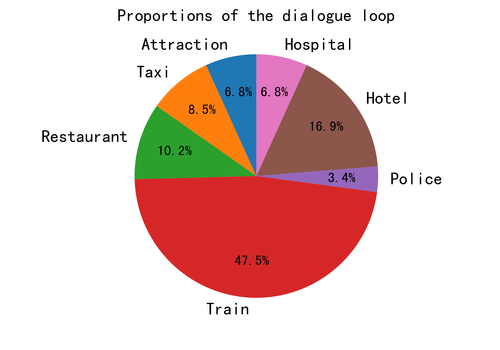

Test Report
Model Name: DAMD
Dataset: multiwoz
Time: 2021-09-27 00:26:28
Overall Results
Success Rate: 26.0 %
(Precision, Recall, F1) : (0.516, 0.538, 0.492)
Average Dialog Turn (Succ): 16.692
Average Dialog Turn (All): 33.280
Metric
| | Total Num | Succ Rate | Precision | Recall | F1 | Dialog Loop Failed Rate | Dialog Turn (Succ) | Dialog Turn (All) |
|---|
| hotel | 29 | 0.414 | 0.394 | 0.586 | 0.451 | 0.345 | 18.000 | 20.207 |
| train | 38 | 0.184 | 0.289 | 0.263 | 0.262 | 0.737 | 12.571 | 30.211 |
| police | 3 | 0.333 | 0.667 | 0.500 | 0.556 | 0.667 | 16.000 | 32.000 |
| restaurant | 44 | 0.864 | 0.555 | 0.739 | 0.613 | 0.136 | 11.105 | 14.864 |
| attraction | 20 | 0.800 | 0.829 | 0.917 | 0.853 | 0.200 | 9.000 | 14.700 |
| taxi | 7 | 0.286 | 0.857 | 0.571 | 0.667 | 0.714 | 22.000 | 27.143 |
| hospital | 4 | 0.000 | 0.250 | 0.083 | 0.125 | 1.000 | 0.000 | 40.000 |
Dialogue Loop
Domain hotel
Overall Results
Success Rate: 41.4 %
(Precision, Recall, F1) : (0.394, 0.586, 0.451)
Average Dialog Turn (Succ): 18.000
Average Dialog Turn (All): 20.207
System NLU Failed Dialog Act:Nothing
User NLU Failed Dialog Act:Nothing
Dialog Loop- Inform-Hotel-Day-dontcare Occur Num: 2
- Request-Hotel-Phone-? Occur Num: 2
- Inform-Hotel-Price-dontcare Occur Num: 1
- Inform-Hotel-Stay-3 Occur Num: 1
- Inform-Hotel-Stay-2 Occur Num: 1
- Inform-Hotel-Stay-5 Occur Num: 1
- Inform-Hotel-Area-north Occur Num: 1
- Inform-Hotel-People-dontcare Occur Num: 1
Bad Inform Dialog Act- inform-hotel-stars Occur Num: 1
Request But Not Inform Dialog Act- request-hotel-phone Occur Num: 5
- request-hotel-internet Occur Num: 3
- request-hotel-address Occur Num: 2
- request-hotel-type Occur Num: 1
Inform But Not Request Dialog Act- inform-hotel-type Occur Num: 7
- inform-hotel-area Occur Num: 6
- inform-hotel-parking Occur Num: 3
- inform-hotel-internet Occur Num: 3
- inform-hotel-phone Occur Num: 3
- inform-hotel-stars Occur Num: 2
Domain train
Overall Results
Success Rate: 18.4 %
(Precision, Recall, F1) : (0.289, 0.263, 0.262)
Average Dialog Turn (Succ): 12.571
Average Dialog Turn (All): 30.211
System NLU Failed Dialog Act:Nothing
User NLU Failed Dialog Act:Nothing
Dialog Loop- Request-Train-Time-? Occur Num: 2
- Inform-Train-Leave-18:30 Occur Num: 2
- Inform-Train-Arrive-12:00 Occur Num: 2
- Inform-Train-Leave-13:00 Occur Num: 2
- Inform-Train-Leave-19:45 Occur Num: 2
- Inform-Train-Leave-09:15 Occur Num: 1
- Inform-Train-Arrive-21:15 Occur Num: 1
- Inform-Train-Leave-20:15 Occur Num: 1
- Inform-Train-Arrive-18:45 Occur Num: 1
- Inform-Train-Arrive-14:45 Occur Num: 1
Bad Inform Dialog Act- inform-train-arriveBy Occur Num: 3
- inform-train-leaveAt Occur Num: 2
- inform-train-price Occur Num: 1
Request But Not Inform Dialog Act- request-train-price Occur Num: 14
- request-train-duration Occur Num: 11
- request-train-trainID Occur Num: 1
- request-train-arriveBy Occur Num: 1
- request-train-leaveAt Occur Num: 1
Inform But Not Request Dialog ActNothing
Domain police
Overall Results
Success Rate: 33.3 %
(Precision, Recall, F1) : (0.667, 0.500, 0.556)
Average Dialog Turn (Succ): 16.000
Average Dialog Turn (All): 32.000
System NLU Failed Dialog Act:Nothing
User NLU Failed Dialog Act:Nothing
Dialog Loop- Request-Police-Phone-? Occur Num: 1
- Request-Police-Post-? Occur Num: 1
Bad Inform Dialog ActNothing
Request But Not Inform Dialog Act- request-police-phone Occur Num: 2
- request-police-postcode Occur Num: 1
Inform But Not Request Dialog ActNothing
Domain restaurant
Overall Results
Success Rate: 86.4 %
(Precision, Recall, F1) : (0.555, 0.739, 0.613)
Average Dialog Turn (Succ): 11.105
Average Dialog Turn (All): 14.864
System NLU Failed Dialog Act:Nothing
User NLU Failed Dialog Act:Nothing
Dialog Loop- Inform-Restaurant-People-dontcare Occur Num: 4
- Inform-Restaurant-NotBook-none Occur Num: 1
- Inform-Restaurant-Day-dontcare Occur Num: 1
Bad Inform Dialog ActNothing
Request But Not Inform Dialog Act- request-restaurant-phone Occur Num: 3
- request-restaurant-address Occur Num: 2
- request-restaurant-postcode Occur Num: 1
Inform But Not Request Dialog Act- inform-restaurant-area Occur Num: 13
- inform-restaurant-food Occur Num: 13
- inform-restaurant-phone Occur Num: 1
Domain attraction
Overall Results
Success Rate: 80.0 %
(Precision, Recall, F1) : (0.829, 0.917, 0.853)
Average Dialog Turn (Succ): 9.000
Average Dialog Turn (All): 14.700
System NLU Failed Dialog Act:Nothing
User NLU Failed Dialog Act:Nothing
Dialog Loop- Request-Attraction-Fee-? Occur Num: 3
- Inform-Attraction-NotBook-none Occur Num: 1
Bad Inform Dialog ActNothing
Request But Not Inform Dialog Act- request-attraction-entrance fee Occur Num: 4
Inform But Not Request Dialog Act- inform-attraction-area Occur Num: 7
- inform-attraction-phone Occur Num: 2
- inform-attraction-type Occur Num: 2
Domain taxi
Overall Results
Success Rate: 28.6 %
(Precision, Recall, F1) : (0.857, 0.571, 0.667)
Average Dialog Turn (Succ): 22.000
Average Dialog Turn (All): 27.143
System NLU Failed Dialog Act:Nothing
User NLU Failed Dialog Act:Nothing
Dialog Loop- Request-Taxi-Car-? Occur Num: 5
Bad Inform Dialog ActNothing
Request But Not Inform Dialog Act- request-taxi-car type Occur Num: 5
- request-taxi-phone Occur Num: 1
Inform But Not Request Dialog ActNothing
Domain hospital
Overall Results
Success Rate: 0.0 %
(Precision, Recall, F1) : (0.250, 0.083, 0.125)
Average Dialog Turn (Succ): 0.000
Average Dialog Turn (All): 40.000
System NLU Failed Dialog Act:Nothing
User NLU Failed Dialog Act:Nothing
Dialog Loop- Request-Hospital-Addr-? Occur Num: 4
Bad Inform Dialog ActNothing
Request But Not Inform Dialog Act- request-hospital-address Occur Num: 4
- request-hospital-postcode Occur Num: 3
- request-hospital-phone Occur Num: 1
Inform But Not Request Dialog ActNothing